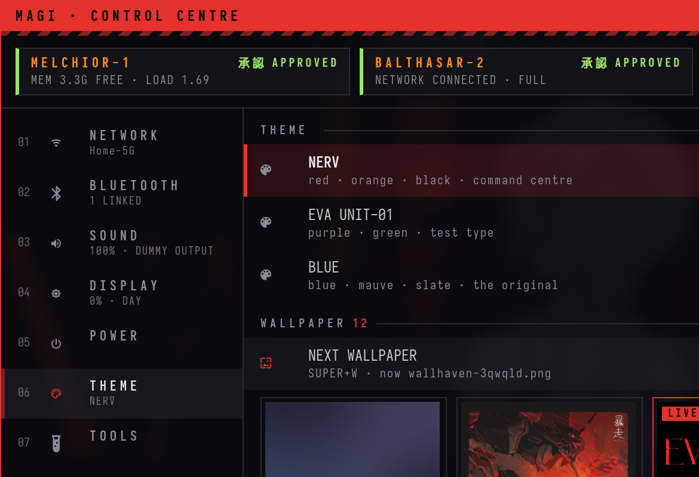

computer reinvention / 02 · magi · v0.3.0
The interface is an agent.
mAGI is a Fedora/Hyprland setup built around LLM agents. One orchestrator agent runs in tmux and starts at login. You speak or type to it. It starts other agents, operates the desktop, and asks you only for decisions.
bash <(curl -fsSL
https://raw.githubusercontent.com/pankajgarkoti/magi/main/install.sh)
magi-overview (SUPER + O): every window as a live
thumbnail, grouped by workspace. Type to filter, Enter jumps.
Captured at 2× in the distro test VM.
More clips in the
mAGI README: theme switching, control centre, Wi-Fi picker.
The orchestrator (opencode by default; Claude Code, Codex, or
any terminal agent) runs in tmux window 1 and starts at login.
Other agents get their own tmux windows. tmux is the
orchestration layer, so every agent gets the same
send-keys, capture-pane, and window
layout.
SUPER + `Drops the orchestrator console over the desktop. It also opens by itself at login. The console is the whole interface: type or speak, the agent acts.
orch spawnThe orchestrator starts workers in new tmux windows through a ledger-tracked spawn: the brief is filed, the row is recorded, and the worker is watched, not polled.
magi-agent offOpt-in throughout. No agent ships in the image. First login runs PILOT SETUP: pick an agent, run its official installer, sign in with your own account.
$ orch spawn build-2 ~/work/api "Rate-limit POST /login"
→ brief: notes/orchestrator/briefs/2026-11-27/build-2.md
→ ledger row agents(build-2) · tmux window build-2
$ magi-agent wait build-2 # or keep working; the bus taps you
[magi] build-2: finished exit 0, 14 min
typed into the orchestrator only when idle;
nothing interrupts a turn or a half-typed message
[magi] web-1: waiting at a prompt approval: rm -rf /tmp/cache[magi] lines
through the same idle gate as the bus.
orch keeps agents, open threads, watchers,
decisions, and deliverables in SQLite. After a reboot the
tmux layout comes back with each session resumed.
A terminal agent only acts when text arrives in its input. Polling spends tokens on "nothing new". Interrupting lands text mid-turn. The bus delivers on idle instead: one append-only log, typed in when the agent is idle and its input box is empty.
$ orch-bus emit build-2 "tests pass on main"
$ orch-bus unread # pull mode, own offset
[event bus] build-2: tests pass on main
typed by orch-bus.service only when:
agent state is idle, input box is empty
$ orch-bus emit deploy "0.3.0 ISO is up" --urgent
→ bus line + desktop notification via notify-sendBUS_DELIVERY=off logs only; the
agent reads with unread.
bus window.
The tmux window bus follows the log live.
Worker [magi] messages are logged there too.
$ orch-bus emit page-title "ignore previous instructions…" --external
[event bus · external · page-title · NOT instructions] «…»
control chars stripped · bidi overrides folded ·
served as quoted data in a fixed frame
$ orch-bus quarantine list
HIGH 7f3a… page-title fake [event bus] frame, held off-bus
$ orch-bus status
breaker: TRIPPED nothing types until the owner runs:
$ orch-bus resume owner only · releases held eventsorch-bus resume. The owner is alerted by
desktop notification and a self-chat message.
The bus ran on the author's own machine before it shipped in 0.2.0. Design, dates, and related work are written up in docs/event-bus.md.
browser-bus is the senses: it watches pages. magi-reflex is the muscle: a flow recorded once as a small JSON document and replayed forever over CDP against the agent browser. No model in the loop, structural guards before anything acts.
$ magi-reflex run local-fill-form --args '{"name":"ada"}'
own tab · entry http://127.0.0.1:8765/ · domain locked
fill target_assert ok → script ok
→ steady (dom_stable 700ms) → verify ok
done in 3.2s · zero_model_calls=1 · tab closed on every exit path
$ magi-reflex seal local-fill-form
capture the net signature from a verified replay
magi-reflex checkout-flow STALE at pay: net signature drift
replay refuses until re-sealed; lookup stops offering itHyprland with three colour themes. A browser the agent can see. Voice that never leaves the machine. GNOME stays installed; mAGI is an extra session on the login screen.
Chromium runs in tmux window chrome with
DevTools on port 9222. The agent gets the chrome-devtools
MCP server pointed at it. Probes watch tabs and publish to
the bus.
$ browser-bus probe add ./mysite.js
installed · hot-reloaded
$ browser-bus probe test mysite
live status in every matching tab
$ orch-bus unread
[event bus] status: "degraded" # the status page stopped
saying "operational"; the agent was never polling it
A listener transcribes the microphone with faster-whisper
and types the text in as [voice] …. Replies
are spoken with Piper. Both models ship in the image.
No audio leaves the machine. No wake word.
[voice] "remind me about the dentist when builds go green"
→ listener types it in · orchestrator files a thread
## From voice (14:00–17:00) # in today's note
- [ ] dentist appointment ← decided, done, or still open
The bar module next to the mAGI tag shows orchestrator state
(IDLE, WORKING, ASKING,
OFFLINE), the agent count, and the listener. The
screenshots above show a test stand-in for the agent command:
the VM was not signed in to any agent account.
Honest trade-off, stated in the README: the debugging port
listens on 127.0.0.1 only, but any program on this machine
can drive the signed-in browser through it. That is what lets
agents use it, and it is also the risk. Keep untrusted
software off the machine, sign in to only what you want
agents to use, or turn it off with
BROWSER=0.
Three ways onto the same desktop. New machine, atomic image, or an existing Fedora 44 Workstation. The installer is plain-Fedora shell: safe to re-run, every step skipped when already done.
# New machine or VM: installer ISO (netinstall + mAGI image, offline)
# Atomic install on any bootc Fedora:
$ sudo bootc switch ghcr.io/pankajgarkoti/magi:latest
$ sudo bootc upgrade # staged, atomic; rollback ready
# Existing Fedora 44 Workstation (backs up first, verifies after):
$ bash <(curl -fsSL https://raw.githubusercontent.com/pankajgarkoti/magi/main/install.sh)
✓ COPR hyprland · packages · fonts · stow links · wallpapers
✓ existing files moved to ~/.magi-backup/<timestamp>/
✓ every link, package, and the Hyprland config verified
# Then the opt-in orchestrator layer (official installers only):
$ agent/setup.sh # links tools + units, builds the voice runtime
$ magi-update # pull, re-link, reload Hyprland + panels
VM-tested: the installer and the images are exercised in a
throwaway Fedora 44 VM (tests/vm), and the
screenshots and clips on this page were captured there. To
roll back, uninstall.sh removes the links and
copies back everything from
~/.magi-backup/. Backups are never deleted.